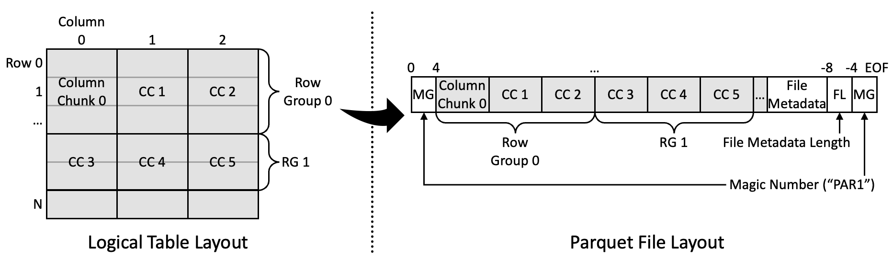

참고한 것들
파티 퀘스트
- 한동안 Parquet file format 을 보다보니 광고도 이런게 뜬다.
- Parquet 는 파티 퀘스트가 아니고 Apache 에서 관리하는 PAX 데이터 포맷을 일컫는다.
- 즉, 몇개의 row 들을 모아 row group 을 만들고, 그 안에서는 columnar 로 저장되는 형식인 것.
- PAX 인 만큼 columnar layout 의 이점을 누릴 수 있다.
Layout Overview
- 여기서는 전체적인 layout 만 살펴보고, 구체적인 spec 은 아래 작물들에서 다룬다.

- 왼쪽이 table 을 나타낸 것이고, 오른쪽은 이런 table 이 저장되는 Parquet file format 을 보여준다.
- 여기서 몇개의 row 들을 묶어 Row Group 이라는 logical unit 으로 묶는다.
- “몇개” 인지는 명확한 기준은 없다. 데이터의 크기에 따라 몇개의 row 가 담길지 결정되는데, 이 Row Group 의 크기는 configurable 하다.
- 대략 1GB 를 권장한다고 한다.
- 그리고 그 안에서는 column 별로 Column Chunk 라는 logical unit 단위로 묶이게 된다.
- 이놈 단위로 파일에 sequential 하게 저장된다.
- 즉, 한 Row Group 에 대한 첫번째 column 의 Column Chunk 가 sequential 하게 저장되고, 두번째 column 의 Column Chunk 가 저장되는 형식인 것.
- Column Chunk 들의 뒤에는 file 의 전체 metadata (File Meta Data) 가 달리고, 그 뒤에 이 metada 의 크기가 담기며, 이 묶음 앞뒤로 Magic number (MG) 가 담기게 된다.
- Magic number 는 unencrypted data 의 경우에는
"PAR1"이 들어가고, encrypted data 의 경우에는"PARE"가 들어간다.- 이 둘은 file 의 첫, 그리고 마지막 4byte 에 담긴다.
- Metadata length 는 tail magic number 옆에 4byte Little endian integer 로 저장된다.
- 즉,
[(file_size - 8):(file_size - 4)]offset 에 저장되는 것.
- 즉,
- Magic number 는 unencrypted data 의 경우에는
- 따라서 file 을 읽을 때는 metadata length 를 읽은 다음에
[(file_size - meta_len - 8):(file_size - 8)]를 읽어주면 metadata 를 읽을 수 있게 된다.- 이 부분에 대한 DuckDB 의 구현은 LoadMetadata() 에서 확인할 수 있고,
- Arrow 의 구현은 DoIt() 에서 확인할 수 있다.
Encoding Overview
- 마찬가지로 구체적인 spec 은 다음의 작물에서 다뤄보자: